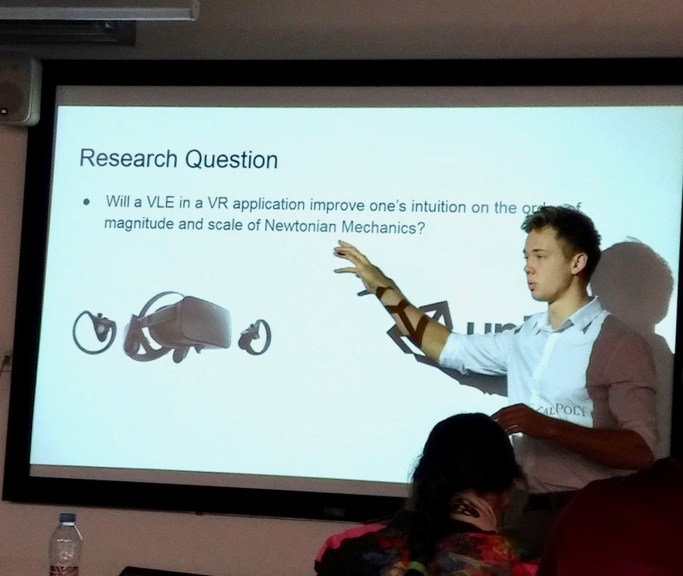
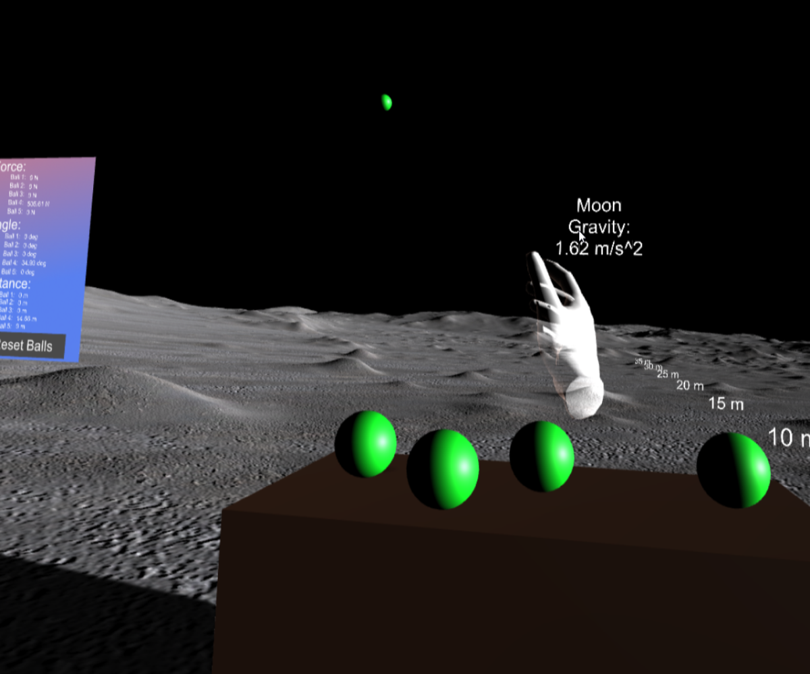
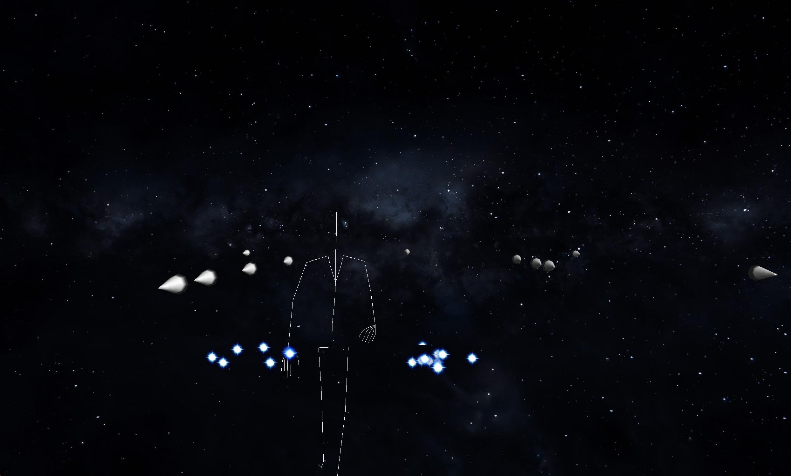
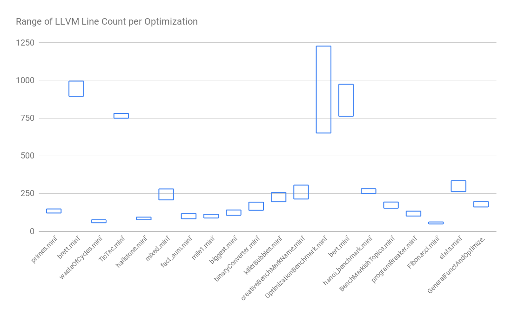
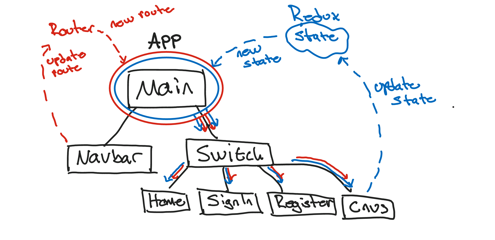

About
Hi! My name is Trevor Brown. I recently graduate from California Polytechnic University with a bachelors degree in computer science. I'm passionate about positively impacting lives through software development. If we share that passion please send me an email!

VR for Teaching Abstract Physics
Using Unity, C#, and the Oculus Rift Jason and I created an education simulation. The goal was to measure to see if virtual reality can improve a student's intuition on abstract physics concepts. After conduncting a user study, we wrote a paper that was accepted as the 4th best submission to iLRN 2019. We flew to London to present our findings, leading to future research.

Bullet Dodger
Developed a fully animated game using only C++ and the OpenGL library. Showcased complex topics such as Quaternion Interpolation, GPU multi-threaded rendering, post-processing effects, matrix manipulation, and responsive animation from user input.

Mini Compiler
Designed a Compiler for mini (a C-like language). Parsed code into an Abstract Syntax Tree. Through parsing code into an abstract syntax tree we automated type-checking, Control Flow Graph construction, ARM assembly translation, optimizations, and outputted machine instructions. Analyzed the runtime of test cases against clang as a control group.

ML Rock Climbing Training
Using a convolutional neural network and emg data from a Myo Armband we trained our network to classify various rock climbing grips. (i.e. crimps, pinches, slopers, jugs, and pockets) After collecting some data from our local climbing gyms, we were able to provide real climbers with training recomendations. Application users were able to see what grips they were weak at, and then the app would suggest various training exersises for that grip. The project was a great proof of concept, but after speaking with our potential user group it became clear that the price of the hardware (Myo armband) was too expensive to consider.

React Group Messaging App
The purpose of this project was to familiarize myself with the topics orbiting React JS. I started by implementing a restful API and creating an extensive Postman test suit. API calls utilized the asynchronous waterfall pattern to avoid concurrency issues.
